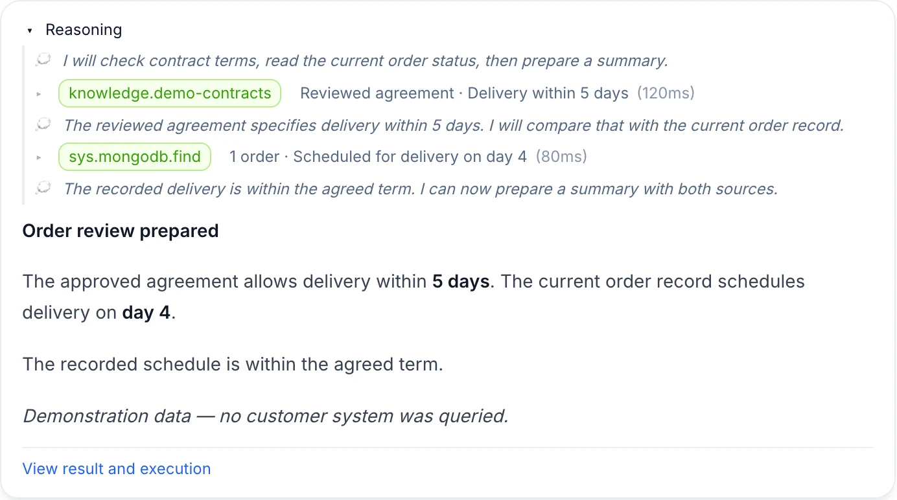

Tra cứu thông tin
Tra cứu thông tin
9 giờ/tuần
Thời gian tìm thông tin cần cho công việc, theo khảo sát nhân sự làm công việc tri thức.
Asana, 2024 · hơn 13.000 người ↗Bài toán vận hành
Khi thông tin nằm ở nhiều nơi, ngay cả một yêu cầu đơn giản cũng mất thời gian tra cứu, nhập lại dữ liệu và tổng hợp báo cáo.
Thời gian tìm thông tin cần cho công việc, theo khảo sát nhân sự làm công việc tri thức.
Asana, 2024 · hơn 13.000 người ↗Tỷ lệ trường nhập sai khi nhập một lần trong một nghiên cứu dữ liệu y tế.
Kawado và cộng sự, 2003 · 104.720 trường ↗Thời gian nhóm lập kế hoạch và phân tích tài chính dùng để thu thập và kiểm tra dữ liệu.
FP&A Trends, 2026 · 475 phản hồi ↗Ví dụ giả định
500 hồ sơ/tháng × 4 phút thao tác/hồ sơ
Bài toán vận hành
Ngay cả khi đã tìm được dữ liệu, công việc vẫn có thể mắc lại ở khâu bàn giao. Khi bán hàng, vận hành, kho và kế toán dùng phần mềm riêng, đội ngũ phải tự đối chiếu trạng thái và báo cho bộ phận xử lý tiếp.
Ví dụ minh họa
Yêu cầu YC-184
Chờ xuất kho
Đơn hàng DH-472
Chờ xác nhận kho
Phiếu xuất PX-328
Đã xuất kho
Tham chiếu DH-472
Chưa lập hóa đơn
Hóa đơn đang chờKho đã ghi nhận xuất hàng. Kế toán chỉ lập hóa đơn sau khi nhận xác nhận từ kho.
Sản phẩm
Đội ngũ giao mục tiêu. Tác nhân AI tra cứu dữ liệu được cấp quyền, thực hiện các bước qua những công cụ hiện có và bàn giao kết quả để đội ngũ kiểm tra.
Chia mục tiêu thành các bước.
Dùng công cụ hoặc chạy quy trình.
Lưu kết quả hoặc cập nhật khi được phép.

Giá trị mang lại
Khi AI đảm nhận các bước tra cứu, đối chiếu và nhập liệu lặp lại, đội ngũ có thêm thời gian xử lý ngoại lệ. Đo năng suất và chi phí trên cùng một quy trình để biết mức cải thiện.
Năng suất
Bớt thời gian tra cứu và nhập liệu. Áp dụng cùng một quy tắc cho mỗi yêu cầu khi khối lượng công việc tăng.
 Chi phí vận hành
Chi phí vận hành
Tính cả công xử lý, công sửa lại và chi phí sử dụng AI. Đối chiếu với cách làm hiện tại trên cùng một loại công việc.
Vai trò của tác nhân
Core Agentic hỗ trợ từ trả lời khách hàng đến đối chiếu chứng từ. Mỗi vai trò có đầu ra cụ thể để đội ngũ kiểm tra hoặc phê duyệt.
Tra cứu tài liệu đã duyệt, đối chiếu nguồn và trả lời kèm trích dẫn.
Tra cứu hồ sơ, giải đáp chính sách đã duyệt và lập danh sách việc cần làm cho nhân viên mới.
Phân loại yêu cầu bán hàng hoặc hỗ trợ, soạn phản hồi và chuyển cho người phụ trách.
Cập nhật trạng thái yêu cầu và đánh dấu ngoại lệ theo lịch hoặc theo sự kiện.
Tra cứu dữ liệu và chuẩn bị thao tác ngay trong phần mềm đội ngũ đang dùng.
Tổng hợp hồ sơ, dẫn nguồn và gợi ý bước tiếp cận cho đội bán hàng.
So sánh chứng từ và dữ liệu giao dịch, đánh dấu chênh lệch để kế toán kiểm tra.
Đối chiếu tài liệu với mẫu đã duyệt và ghi lại khác biệt để chuyên viên rà soát.
Cấu hình tác nhân theo quy trình riêng của từng đội ngũ.
Thiết lập kênh, nguồn thông tin, công cụ và quy tắc phê duyệt cho từng vai trò.
Xem các ví dụ ứng dụngKiến trúc
Tác nhân làm việc qua các kênh đội ngũ đang dùng và truy cập dữ liệu được cấp quyền. ERP, CRM và các hệ thống nghiệp vụ hiện có vẫn lưu dữ liệu chính thức.
Môi trường triển khai riêng cho từng khách hàng.
Công cụ và bộ kết nối
Quyền truy cập · Phê duyệt · Nhật kýSơ đồ triển khai tổng quan. Chọn kênh, bộ kết nối và mô hình theo phạm vi dự án.
Xem kiến trúc Core AgenticKiểm soát
Khi tác nhân kết nối với hệ thống, đội ngũ quyết định AI được đọc dữ liệu nào, thao tác nào cần duyệt và cách kiểm tra lại trong nhật ký.
Cấp đúng quyền cho từng nguồn và thao tác. Bắt đầu với quyền chỉ đọc nếu phù hợp.
Khi cần phê duyệt, AI dừng để người phụ trách xem nội dung thay đổi trước khi quyết định.
Kiểm tra lần chạy, quyết định phê duyệt và thao tác đã thực hiện.
PR-DEMO-1042
Chờ phê duyệtTrong ví dụ lập kế hoạch vật tư, tác nhân đề nghị cập nhật số lượng mua. Người phụ trách xem nội dung thay đổi trước khi duyệt hoặc từ chối.

Cách chúng tôi triển khai
Chúng tôi cùng đội ngũ của bạn chọn một công việc lặp lại, thống nhất kết quả cần đạt và các thao tác phải duyệt, rồi so sánh với cách làm hiện tại.
Chọn người phụ trách, ghi nhận hiện trạng và thống nhất tiêu chí đầu ra.
Dùng đầu vào mẫu để kiểm tra kết quả và các điểm cần phê duyệt.
So sánh số kết quả đạt yêu cầu mỗi giờ công và chi phí cho mỗi kết quả, kể cả công sửa lại.
Kinh nghiệm triển khai
Kinh nghiệm của chúng tôi trải rộng từ sản xuất và logistics đến công nghệ và giáo dục.


Chi phí
Báo giá dựa trên quy trình đã chọn, hệ thống cần kết nối, môi trường triển khai, số tài khoản và mức sử dụng dự kiến.
Khảo sát quy trình, kết nối hệ thống, cấu hình và kiểm thử các luồng công việc đã thống nhất.
Một lần
Bao gồm quyền sử dụng Core Agentic và bảo trì nền tảng theo phạm vi đã thỏa thuận.
Định kỳ
Tính theo lượng sử dụng mô hình AI và các dịch vụ bên thứ ba đã thỏa thuận.
Theo mức sử dụng
Báo giá nêu rõ thuê bao bao gồm những gì, cách đo mức sử dụng, hạn mức và cách tính phí vượt hạn mức nếu áp dụng. Phát triển theo yêu cầu và hỗ trợ nâng cao được báo giá riêng khi cần.